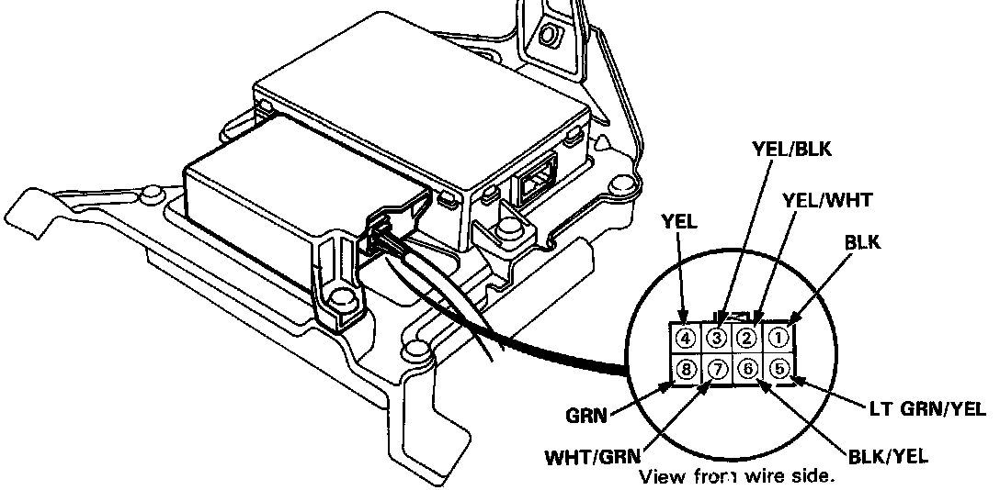
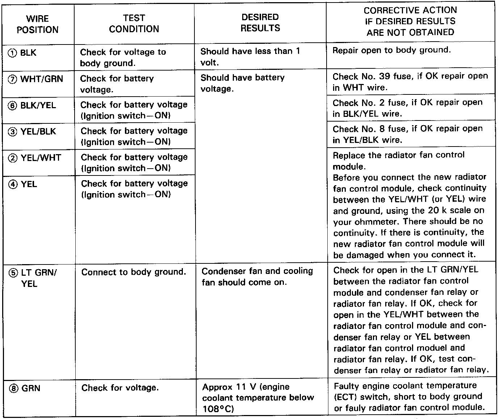

Radiator Fan Control Module Input Tests
Radiator Fan Control Module Input TestsNOTE: Perform the following tests with the radiator fan control module connected and the ignition switch ON and the A/C switch OFF.
If you find the cause of a problem, correct it before you continue.

